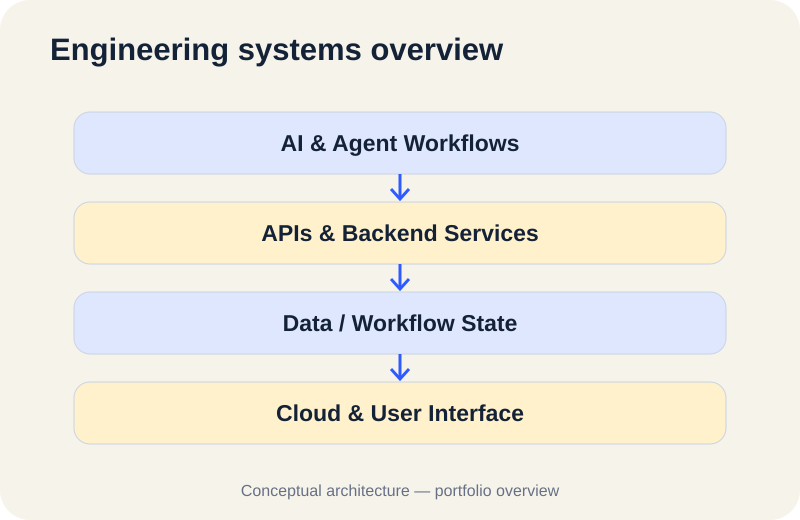

01
Agent workflows
In RiskIQ, I use specialist agents to handle investigations and explanations. I also track workflow states so a person can review the results before a decision moves forward.
KRISHIL PATEL / CS + APPLIED PHYSICS
I enjoy building software that connects AI models with the rest of an application, including APIs, databases, and interfaces.
I study Computer Science and Applied Physics at Rutgers. My projects focus on AI and software engineering, especially the work involved in making models useful inside an application. Here you can read about what I built and how I approached the technical decisions.

Website objectives
I like understanding how the pieces of an application work together. That means spending time on API contracts, data quality, and the experience someone has when using the software, alongside the AI itself.
In RiskIQ, I use specialist agents to handle investigations and explanations. I also track workflow states so a person can review the results before a decision moves forward.
I work with REST APIs, relational databases, and data processing. I pay attention to how data is validated, stored, and passed between services.
I use React for interfaces and AWS for application infrastructure. I want people using the software to understand what is happening and what they can do next.
Featured work
RiskIQ and Virtual Asset Management are two projects where I worked across the backend, data, and user interface. The Work page explains the architecture and the decisions behind each one.
A Python/FastAPI and LangGraph platform coordinating risk, fraud, anomaly, forecasting, and review workflows with persistent state and human approval.
I built RiskIQ to explore how specialized AI agents can help with fraud investigations, forecasting, and human-reviewed risk decisions.
A React and Spring Boot portfolio platform combining market-data ingestion, relational storage, approximately 70 API endpoints, AWS infrastructure, and Gemini-powered analysis.
I built a portfolio application that connects Spring Boot APIs, market-data feeds, React dashboards, AWS services, and Gemini-based analysis.
How to explore
At NJIT, I worked with millions of social-media posts to study sentiment and how geopolitical topics were discussed. Preparing the data and interpreting the model outputs taught me to question what the results can actually tell us.